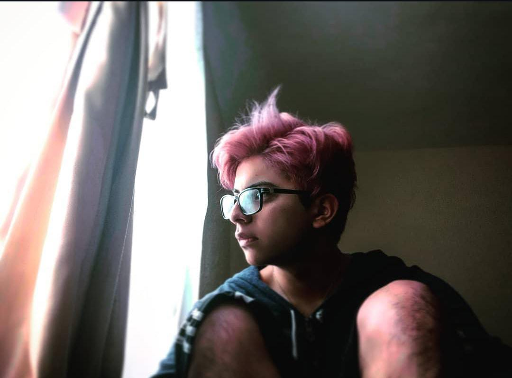

Tabla de resúmen
| Nombre | Daniel Jarrin |
|---|---|
| Edad | 21 años |
| Cedula | 1723689103 |
| Dirección | Salcedo |
| Foto |  |
Presentación
Hola que tal al que este leyendo esto... Esta es mi primera vez haciendo una interfaz web. Mi nombre es Daniel, soy de Quito, estudio en la Universidad Técnica de Cotopaxi, ingeniería en sistemas y por eso estoy haciendo esta interfaz web :3. En esta tabla se muestra información corta y muy resumida sobre mi información personal incluyendo una foto mia que es una de mis favoritas. Tambien se muestra algunos de los conocimientos técnicos que he llegado a aprender. En la sección de mas abajo se encuentran mis hobbies o cosas que me parecen divertidas o que me entretienen uwu
Conocimientos


Entretenimientos
Skateboard
Desde muy joven, aproximadamente a los 14 años me empezo a gustar el skate y desde entonces lleve practicando mucho incluso en el colegio, se convirtio en una manera de pasar el tiempo y de divertirme mientras tambien hago deporte aunque con el pasar del tiempo y con la pandemia tuve que alejarme de este deporte aun tengo el gusto de seguir patinando. Eso explica porque subi de peso en aquel tiempo xd
Videojuegos
Pienso que a todo el mundo le encantan los videojuegos o bueno en su gran mayoria si que les agrada. Desde muy niño siempre me gusto los videojuegos y con ello desperto mucha curiosidad de como funcionan o cual es el trabajo de desarrollo detras de ese videojuego y es tambien una de las causas de porque elegi esta carrera mas sin embargo mi objetivo no es dedicarme al desarrollo de videojuegos. Con la llegada de la pandemia deje de lado el skate y empece a tener mucho apego a la tecnologia y con ello videojuegos de tipo online y competitivo como Fornite o League of Legends, tambien suelo jugar los clasicos desde el tipico Mario y sus varias versiones hasta juegos como Halo o Resident Evil, incluso juegos de autos, en fin una infinidad, Amo los videojuegos son una forma de liberar mi estres de la Universidad :D

YouTube, Twitch, Kick
Plataformas de streaming, no hay mejor combinación en mi opinión que programar mientras de fondo tienes a tu streamer preferido, muchos les gusta la musica de fondo o incluso el silencio pero en mi gusto personal me agrada programar o realizar mis actividades mientras miro o escucho a alguien jugar Minecraft o haciendo cualquier actividad en directo. De hecho alguna vez pense en ser como ellos pero neeee, si algun dia me animo a dedicarme a algo asi, ven apoyarme ;D
Mi Pareja :3
Ella es mi pareja, su nombre es Alisson, nos conocimos en el colegio y bueno pasamos por varias cosas como para llegar a estar juntos 6 años. Vivimos juntos y con ella hemos ido construyendo nuestro futuro de poco poco :3. Nuestro mayor capricho hasta el momento creo yo es nuestro auto :3. Ella tambien esta estudiando en la Universidad, aunque en otra facultad jeje pero ahi vamos formandonos como profesionales. Es la chica de mis sueños uwu. Oh y tambien tenemos 2 gatitos: